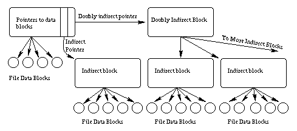
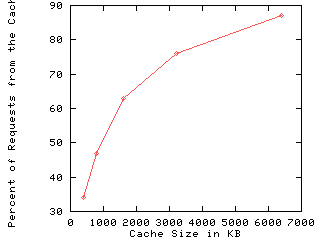

![[ TABLE OF CONTENTS ]](../gx/indexnew.gif)
![[ FRONT PAGE ]](../gx/homenew.gif)


Everyone wants a fast computer. However, not everyone realizes that one of the most important factors of computer performance is the speed of the file system. Regardless of how fast your CPU is, if the file system is slow then the whole computer will also seem slow. Many people with very fast Pentium Pro's but slow disk drives and slower networked file systems rediscover this fact daily.
Luckily, Linux has a very fast file system called the Extended File System Version 2 (EXT2). The EXT2 file system was created by Remy Card (card@masi.ibp.fr). This article will show you how the EXT2 file system is organized on disk and how it gets it's speed.
There are several objectives when deciding how to lay data out upon a disk.
First and foremost, the data structure should be recoverable. This means that if there is some error while writing data to the disk (like a silly user pulling the power cord) the entire file system is not lost. Although loosing the data currently being written is often acceptable, loosing all the data on the disk is not.
Secondly, the data structure must allow for an efficent implementation of all needed operations. The hardest operation to implement is normally the hard link. When using a hard link, there are more than one directory entry (more than one file name) that points to the same file data. Accessing the data by any of the valid file names should produce the same data.
Another hard operation involves deleting an open file. If some application has a file open for access, and a user deletes the file, the application should still be able to access the file's data. The data can be cleared off the disk only when the last application closes the file. This behavior is quite unlike DOS/Windows, where deleting a file means that applications who have already begun to access the file loose all further access. Applications that use this UNIX behavior concerning deleted files are more common than one might think, and changing it would break many applications.
Thirdly, a disk layout should minimize seek times by clustering data on disk. A drive needs more time to read two pieces of data that are widely seperated on the disk than the same sized pieces near each other. A good disk layout can minimize disk seek time (and maximize performance) by clustering related data close together. For example, parts of the same file should be close together on disk, and also near the directory containing the file's name.
Finally, the disk layout should conserve disk space. Consurving disk space was more important in the past, when hard drives were small and expensive. These days, consurving disk space is not so important. However, one should not waste disk space unnecessarily.
Partitions are the first level of disk layout. Each disk must have one or more partitions. The operating system pretends each partition is a seperate logical disk, even though they may share the same phyical disk. The most common use of partitioning is allow more than one file system to exist on the same physical disk, each in its own partition. Each partition has its own device file in the /dev directory (e.g. /dev/hda1, /dev/hda2, etc.). Every EXT2 file system occupies one partition, and fills the whole partition.
The EXT2 file system is divided into groups, which are just sections of a partition. The division into groups is done when the file system is formatted, and cannot change without reformatting. Each group contains related data, and is the unit of clustering in the EXT2 file system. Each group contains a superblock, a group descriptor, a block bitmap, an inode bitmap, an inode table, and finally data blocks, all in that order.
Some information about a file system belongs to the file system as a whole, and not to any particular file or group. This information includes the total number of blocks within the file system, the time it was last checked for errors, and so on. Such information is stored in the superblock.
The first superblock is the most important one, since that is the one read when the file system is mounted. The information in the superblock is so important that the file system cannot even be mounted without it. If there were to be a disk error while updating the superblock, the entire file system would be ruined. Therefore, a copy of the superblock is kept in each group. If the first superblock becomes corrupted, the redundent copies can be used to fix the error by using the command e2fsck.
The next block of each group is the group descriptor. The group descriptor stores information on each group. Within each group descriptor is a pointer to the table of inodes (more on inodes in a moment) and allocation bitmaps for inodes and data blocks.
An allocation bitmap is simply a list of bits describing which blocks or inodes are in use. For example, data block number 123 is in use if bit number 123 in the data bitmap is set. Using the data and inode bitmaps, the file system can determine which blocks and inodes are in current use and which are available for future use.
Each file on disk is associated with exactly one inode. The inode stores important information about the file including the create and modify times, the permissions on the file, and the owner of the file. Also stored is the type of file (regular file, directory, device file like /dev/ttyS1, etc) and where the file is stored on disk.
The data in the file is not stored in the inode itself. Instead, the inode points to the location of the data on disk. There are fifteen pointers to data blocks within each inode. However, this does not mean that a file can only be fifteen blocks long. Instead, a file can be millions of blocks long, thanks to the indirect way that data pointers point to data.
The first thirteen pointers point directly to blocks containing file data. If the file is thirteen or fewer blocks long, then the file's data is pointed to directly by pointers within each inode, and can be accessed quickly. The fourteenth pointer is called the indirect pointer, and points to a block of pointers, each one of which points to data on the disk. The fifteenth pointer is called the doubly indirect pointer, and points at a block containing many pointers to blocks each of which points at data on the disk. Perhaps the picture below will make things clear.

Figure showing the pointers between an inode and it's associated
data.
This scheme allows direct access to all the data of small files (files less than fourteen blocks long) and still allows for very large files with only a few extra accesses. As the table below shows, almost all files are actually quite small. Therefore, almost all files can be accessed quickly with this scheme.
| File Size (bytes) | 0-768 | 769-1.5K | 1.5K - 3K | 3K - 6K | 6K-12K | 12K and up |
| Occurence (%) | 38.3 | 19.8 | 14.2 | 9.4 | 7.1 | 10.1 |
| Cumulative (%) | 38.3 | 58.1 | 72.3 | 81.7 | 89.8 | 99.9 |
Table showing occurence of various file sizes.
Inodes are stored in the inode table, which is at a location pointed to by the group descriptor within each group. The location and size of the inode table is set at format time, and cannot be changed without reformatting. This means that the maximum number of files in the file system is also fixed at format time. However, each time you format the file system you can set the maximum number of inodes with the -i option to mke2fs.
No one would like a file system where files were accessed by inode number. Instead, people want to give textual names to files. Directories associate these textual names with the inode numbers used internally by the file system. Most people don't realize that directories are just files where the data is in a special directory format. In fact, on some older UNIXs you could run editors on the directories, just to see what they looked like internally (imagine running vi /tmp).
Each directory is a list of directory entries. Each directory entry associates one file name with one inode number, and consists of the inode number, the length of the file name, and the actual text of the file name.
The root directory is always stored in inode number two, so that the file system code can find it at mount time. Subdirectories are implemented by storing the name of the subdirectory in the name field, and the inode number of the subdirectory in the inode field. Hard links are implemented by storing the same inode number with more than one file name. Accessing the file by either name results in the same inode number, and therefore the same data.
The special directories "." and ".." are implemented by storing the names "." and ".." in the directory, and the inode number of the current and parent directories in the inode field. The only special treatment these two entries recieve is that they are automatically created when any new directory is made, and they cannot be deleted.
The easiest way to understand the EXT2 file system is to watch it in action.
To explain the EXT2 file system in action, we will need two things: a variable that holds directories named DIR, and a path name to look up. Some path names have many components (e.g. /usr/X11/bin/Xrefresh) and others do not (e.g. /vmlinuz).
Assume that some process wants to open a file. Each process will have associated with it a current working directory. All file names that do not start with "/" are resolved relative to this current working directory and DIR starts at the current working directory. File names that start with "/" are resolved relative to the root directory (see chroot for the one exception), and DIR starts at the root directory.
Each directory name in the path to be resolved is looked up in DIR as it's turn comes. This lookup yields the inode number of the subdirectory we're interested in.
Next the inode of the subdirectory is accessed . The permissions are checked, and if you have access permissions, then this new directory becomes DIR. Each subdirectory in the path is treated the same way, until only the last component of the path remains.
When the last component of the pathname is reached, the variable DIR contains the directory that actually holds the file name we've been looking for. Looking in DIR tells us the inode number of the file. Accessing this final inode tells where the data for the file is stored. After checking permissions, you can access the data.
How many disk accesses were needed to access the data you wanted? A reasonable maximum is two per subdirectory (one to look up the name, the other to find the inode) and then two more for the actual file name itself. This effort is only done at file open time. After a file has been opened, subsequent accesses can use the inode's data without looking it up again. Further, caching eliminates many of the accesses needed to look up a file (more later).
Put the starting directory in DIR.
Put the pathname in PATH.
While (PATH has one than one component)
Take one component off PATH.
Find that component in DIR yielding the INODE.
If (permissions on INODE are not OK)
Return ERROR
Set DIR = INODE
End-While
Take the last component off PATH yielding FILENAME.
Find FILENAME in DIR yielding INODE.
If (permission on INODE are not OK)
Return ERROR
Store INODE with the process for quick later lookup.
Return SUCCESS.
|
Pseudo-code for opening a file.
When a new file or directory is created, the EXT2 file system must decide where to store the data. If the disk is mostly empty, then data can be stored almost anywhere. However, performance is maximized if the data is clustered with other related data to minimize seek times.
The EXT2 file system attempts to allocate each new directory in the group containing it's parent directory, on the theory that accesses to parent and children directories are likely to be closely related. The EXT2 file system also attempts to place files in the same group as their directory entries, because directory accesses often lead to file accesses. However, if the group is full, then the new file or new directory is placed in some other non-full group>
The data blocks needed to store directories and files can found by looking in the data allocation bitmap. Any needed space in the inode table can be found by looking in the inode allocation bitmap.
Like most file systems, the EXT2 system relies very heavily on caching. A cache is a part of RAM dedicated to holding file system data. The cache holds directory information, inode information, and actual file contents. Whenever an application (like a text editor or a compiler) tries to look up a file name or requests file data, the EXT2 system first checks the cache. If the answer can be found in the cache, then the request can be answered very quickly indeed without using the disk.
The cache is filled with data from old requests. Therefore, if you request data that you have never requested before, the data will not be in the cache, and must be retrieved from disk. Luckily, most of the time most people ask for data they have used before. These repeat requests are answered quickly from the cache, saving the disk drive much effort while providing the user quick access.
Of course, each computer has a limited amount of RAM available. Most of that RAM is used for other things like running applications, leaving perhaps 10% to 30% of total RAM available for the cache. When the cache becomes full, the oldest unused data (least recently used data) is thrown out. Only recently used data remains in the cache.
Since larger caches can hold more data, they also can satisfy a larger number of requests. The figure below shows a typical curve of the total cache size versus the percent of all requests that can be satisfied from the cache. As you can see, using more RAM for caching increase the number of requests answered from the cache, and therefore increase the apparent speed of the file system.

Figure #1: A typical curve of total cache
size vs. the number of requests satisfied from the cache.
It has been said that one should make things as simple as possible, but no simpler. The EXT2 file system is rather more complex than most people realize, but this complexity results in both the full set of UNIX operations working correctly, and good performance. The code is robust and well tested, and serves the Linux community well. We all owe a debt of thanks to M. Card.
The data for the figures in this paper can all be found in my dissertation Improving File System Performance with Predictive Caching. See the URL http://euclid.nmu.edu/~randy .
An excellent paper with more technical detail can be found at http://step.polymtl.ca/~ldd/ext2fs/ext2fs_toc.html .
Some performance data can be found at http://www.silkroad.com/linux-bm.html .